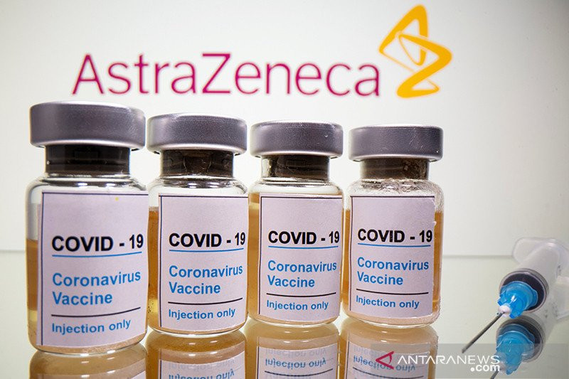
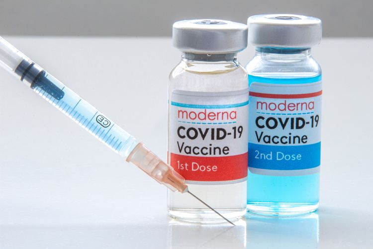
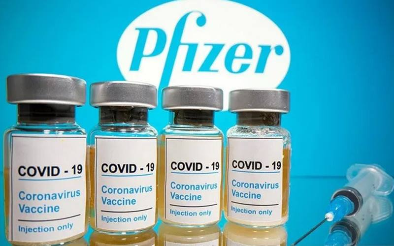
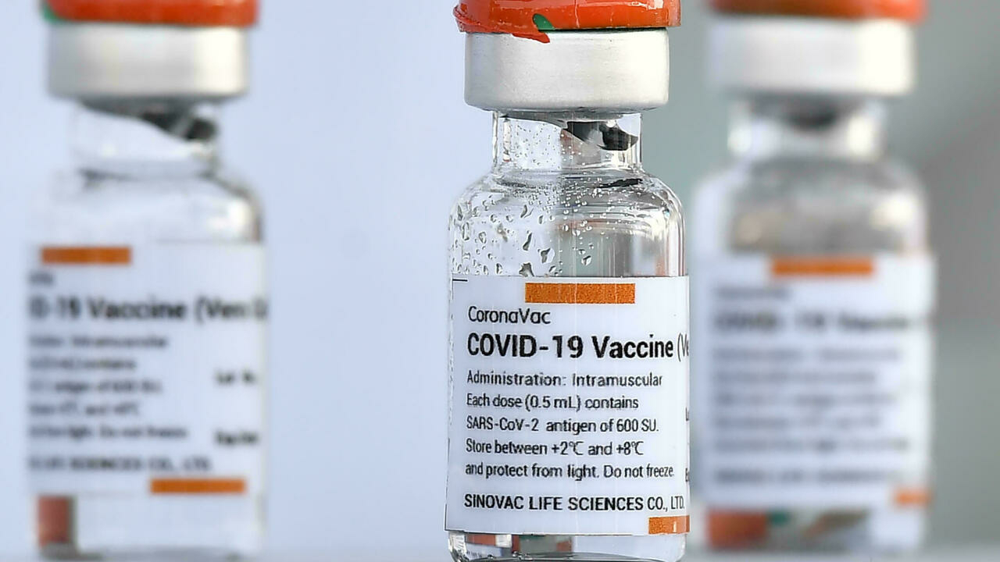
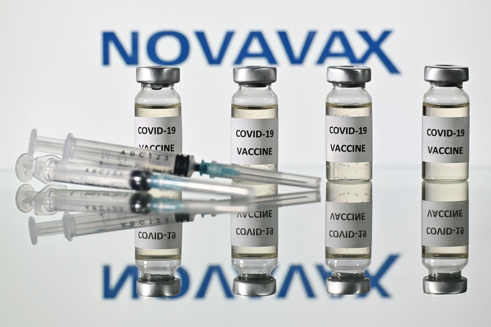
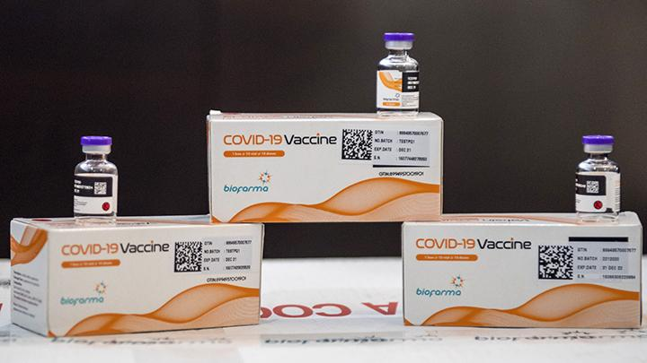

Jenis vaksin COVID-19 yang digunakan di Indonesia yaitu vaksin yang diproduksi PT Bio Farma, Oxford-AstraZeneca, Sinopharm, Moderna, Novavax, Pfizer-BioNTech, dan Sinovac.
1. Oxford-AstraZeneca

Jenis vaksin COVID-19 Oxford-AstraZeneca adalah vaksin vektor adenoviral rekombinan. Dikutip dari Very Well Health, vaksin rekombinan menggunakan sebagian kecil materi genetik dari patogen, seperti SARS-CoV-2, untuk memicu respons imun.
Bagian tertentu dari virus dapat menjadi sasaran dan vaksin ini umumnya aman digunakan pada populasi orang yang besar bahkan mereka yang memiliki masalah kesehatan kronis atau orang dengan gangguan kekebalan.
Satu kelemahan dari vaksin vektor adenoviral rekombinan adalah bahwa suntikan penguat mungkin diperlukan dari waktu ke waktu.
2. China National Pharmaceutical Group Corporation (Sinopharm)

Jenis vaksin COVID-19 Sinopharm memanfaatkan virus Corona yang sudah dimatikan atau sering disebut dengan inactivated vaccine. Vaksin ini diklaim menjadi yang pertama di dunia yang menunjukkan imunogenisitas dan keamanan yang sangat bagus.
Dikutip dari New York Times, jenis vaksin COVID-19 Sinopharm bekerja dengan mengajarkan sistem kekebalan untuk membuat antibodi melawan virus corona SARS-CoV-2. Antibodi menempel pada protein virus, seperti yang disebut lonjakan protein yang menempel di permukaannya.
Setelah divaksin dengan vaksin COVID-19 Sinopharm, sistem kekebalan tubuh dapat merespons infeksi virus Corona hidup. Salah satu jenis sel kekebalan yaitu sel B menghasilkan antibodi yang menempel pada penyerang. Antibodi yang menargetkan spike protein dapat mencegah virus memasuki sel.
3. Moderna

Jenis vaksin COVID-19 Moderna menggunakan messenger RNA (mRNA). Virus Corona memiliki struktur seperti spike di permukaannya yang disebut protein S. Vaksin mRNA COVID-19 memberi petunjuk kepada sel tentang cara membuat bagian protein S yang tidak berbahaya.
Setelah vaksinasi, sel mulai membuat potongan protein dan menampilkannya pada permukaan sel. Sistem kekebalan akan mengenali bahwa protein tidak termasuk di sana dan mulai membangun respons kekebalan dan membuat antibodi.
4. Pfizer-BioNTech

Vaksin COVID-19 Pfizer-BioNTech dinamakan BNT162b2 dan berbasis teknologi messenger RNA (mRNA). Vaksin ini menggunakan gen sintetis yang lebih mudah diciptakan, sehingga bisa diproduksi lebih cepat dibanding teknologi biasa.
Virus yang tidak aktif ini tidak menyebabkan sakit tetapi mengajari sistem imun untuk memberikan respons perlawanan. Dengan mRNA, tubuh tidak disuntik virus mati maupun dilemahkan, melainkan disuntik kode genetik dari virus tersebut. Hasilnya, tubuh akan memproduksi protein yang merangsang respons imun.
CDC mengatakan jenis vaksin COVID-19 Pfizer-BioNTech direkomendasikan untuk orang yang berusia 16 tahun ke atas. Sama seperti vaksin COVID-19 Moderna, CDC juga memberikan sejumlah kriteria bagi orang-orang yang tidak disarankan menerima vaksin Pfizer yang sama seperti vaksin Moderna.
5. Sinovac

Jenis vaksin COVID-19 Sinovac bekerja untuk menguatkan sistem kekebalan tubuh sehingga antibodi dapat melawan virus Corona. Vaksin ini dibuat dengan platform atau metode virus yang telah dimatikan (inactivated virus).
Lewat cara tersebut maka tubuh bisa belajar mengenali virus penyebab COVID-19, SARS-COV-2, tanpa harus menghadapi risiko infeksi serius. Vaksin ini diberikan dalam dua dosis atau perlu dua kali suntikan.
6. Novavax

Novavax adalah perusahaan bioteknologi yang berbasis di Maryland, Amerika Serikat yang mengambil pendekatan tradisional untuk mengembangkan vaksin melawan COVID-19. Vaksin Novavax menggunakan spike protein yang dibuat khusus yang meniru protein spike alami dalam virus Corona.
Dikutip dari Very Well Health, vaksin ini bekerja dengan memasukkan protein yang memicu respons antibodi, yang menghalangi kemampuan virus Corona di masa depan untuk mengikat sel dan mencegah infeksi. Protein tersebut dikombinasikan dengan adjuvan Matrix-M Novavax, yang penting dalam meningkatkan respons imun yang ditimbulkan oleh antigen protein.
Seperti kandidat vaksin COVID-19 lainnya, vaksin Novavax telah diuji pada orang dewasa berusia 18 tahun ke atas. Perusahaan tersebut belum memberikan update tentang uji coba pada anak-anak dan remaja. Informasi mengenai kekhawatiran untuk kelompok tertentu belum diberikan, tetapi informasi ini diharapkan akan terungkap melalui uji klinis tahap akhir.
7. PT Bio Farma

Jenis vaksin COVID-19 yang diproduksi PT. Bio Farma menjadi salah satu jenis vaksin virus Corona yang akan digunakan di Indonesia. Dalam perkembangannya, PT. Bio Farma telah menerima sertifikat yang menyatakan fasilitas produksinya layak untuk memproduksi vaksin COVID-19.
Sertifikat Cara Pembuatan Obat yang Baik (CPOB) atau Good Manufacturing Practice (GMP) ini resmi diberikan oleh Badan Pengawas Obat-obatan dan Makanan (Badan POM) kepada pihak Bio Farma.
“Kita mendapatkan sertifikasi CPOB dari Badan POM dengan demikian Bio Farma menjadi sangat layak untuk memproduksi vaksin COVID-19 yang sudah ditunggu kehadirannya oleh masyarakat Indonesia,” jelas Direktur Utama Bio Farma Honesti Basyir dalam keterangan tertulis, Rabu (30/12/2020).
Selain produksi, Bio Farma juga telah menyiapkan sistem distribusi yang terintegrasi digital guna memastikan jaminan kualitas dari vaksin yang akan diberikan pada rakyat Indonesia.